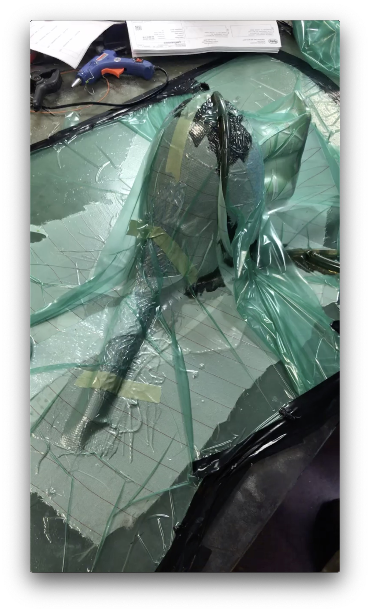
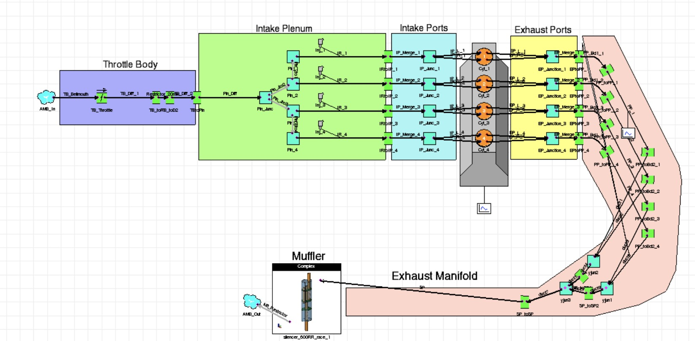
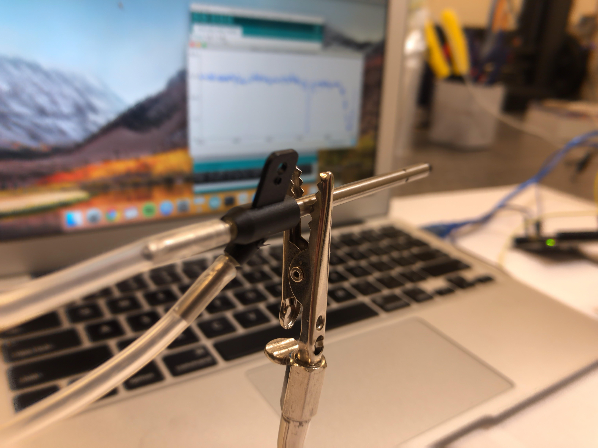
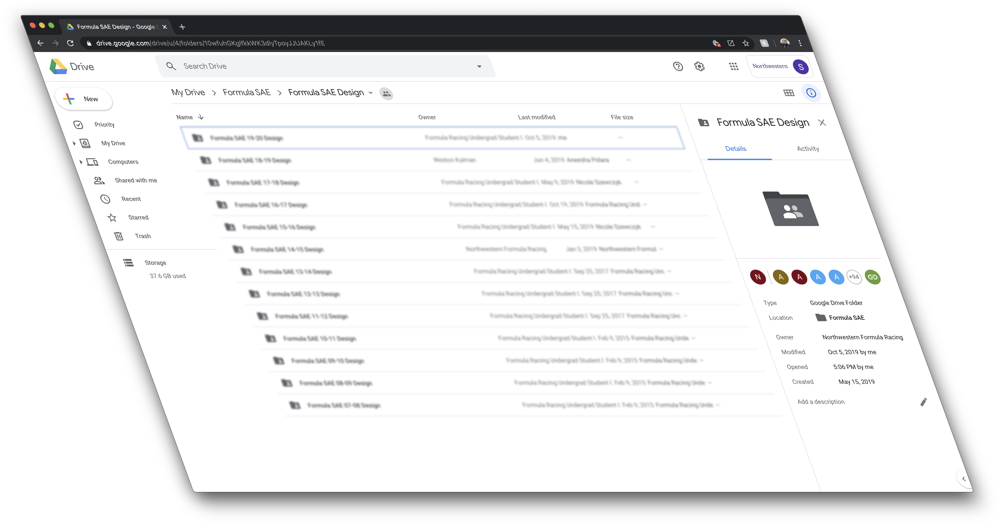

Near the end of my first year of school (and FSAE), I was selected to lead the powertrain subteam for the 2019-2020 season. Currently, we are starting the manufacturing after a long quarter of design work. During my time as powertrain lead, I have worked hard to create a more unified group of engineers that can learn from each other and have fun together. Likewise, I have worked to help develop more than technical skills. By helping my members build networking skills and prepare for careers I have helped cultivated strong bonds between our subteam members and the rest of NUFSAE.
On the technical side, I began the 2019-20 design season with the goal of developing a more reliable powertrain over last year while improving performance where economical and feasible from a technical perspective.
In order to achieve these goals, my team has been hard at work on some very cool projects. Check them out below:
Northwestern Formula Racing 2019-2020 Executive Members

NFR20 lubrication engineers introduce pressure baffles to improve dearation and reduce sloshing during acceleration.

I researched and developed a manufacturing method to help intake engineers design a stronger manifold to prevent damage if fuel were to ignite in the intake. In previous years, this has lead to exploding manifolds. The layup process consisted of printing a positive mold out of high-impact polystyrene and using a technique known as vacuum-resin-infusion to create a single-part, seamless manifold shell.
4 to vs 4-2-1:
Exhaust Headers

Through Ricardo Wave simulations, exhaust engineers proposed and developed a 4-2-1 exhaust header pipe system leading to improved power & exhaust scavenging and a more optimized engine power band over NFR18
Pitot Tube Testing:
Confirming Models

NFR20 cooling engineers employed hobby-grade pitot tubes to empirically measure airflow in the radiator region to confirm the results of CFD simulations and heat transfer equations.
Wire EDM and Topology
Optimization for Shifting

During FSAE Michigan 2019, the cast aluminium lever connecting NFR's shifting actuator to the yamaha R6 engine sheared off. In order to avoid this in 2020, my shifting engineer used topology optimization software and wire edm to manufacture a shifting clevis that is far better suited for our application than commercially available options.
Creating a Full-Meta
Part Library in the Cloud

Each year members spend hours redrawing parts that are being reused from previous years due to poor organization and bad documentation. To reduce design time, I created a repository of commonly used powertrain components including material definitions and weights for each component. This practice not only accelerates the design process, but also reduces dimensional inaccuracies year over year and allows for more precise mass studies in assembly mode.
During the FSAE Design process, it become necessary to bring individual team member's parts together in a large assembly file to check packaging and begin developing line routing. In the past, this was done by constantly zipping assembly files and sharing them in the cloud or with a flash drive. This year, I implemented an auto-sync tool known as Google Drive: Back up and Sync in order to constantly backup and sync all assembly and part files to each team member's laptop allowing for practically live updates to the overall assembly files.
During the 2018-2019 design season, I used CFD and heat transfer principles to develop an optimal cooling system for NFR19. This system consisted of a radiator, pump, fan, lines, swirl tank, condensation tank, and overfill reservoirs. Design started by modeling the engine in order to determine the amount of heat transferred to the coolant. Next, a model was created to determine the mass-flow of air in the region where the radiator would be packaged. Hand calculations were performed in order to determine the size of the radiator using standard size components that were available from the sponsor that would be creating our radiator. The system works very will, even to this day, but there were definitely some challenges along the way. Leaky connections were solved by using better hose clamps designed for air conditioners, radiator fins that got bent by rocks or negligence were protected with a grate during driving or a shield in storage.
The Northwestern Formula Racing Team